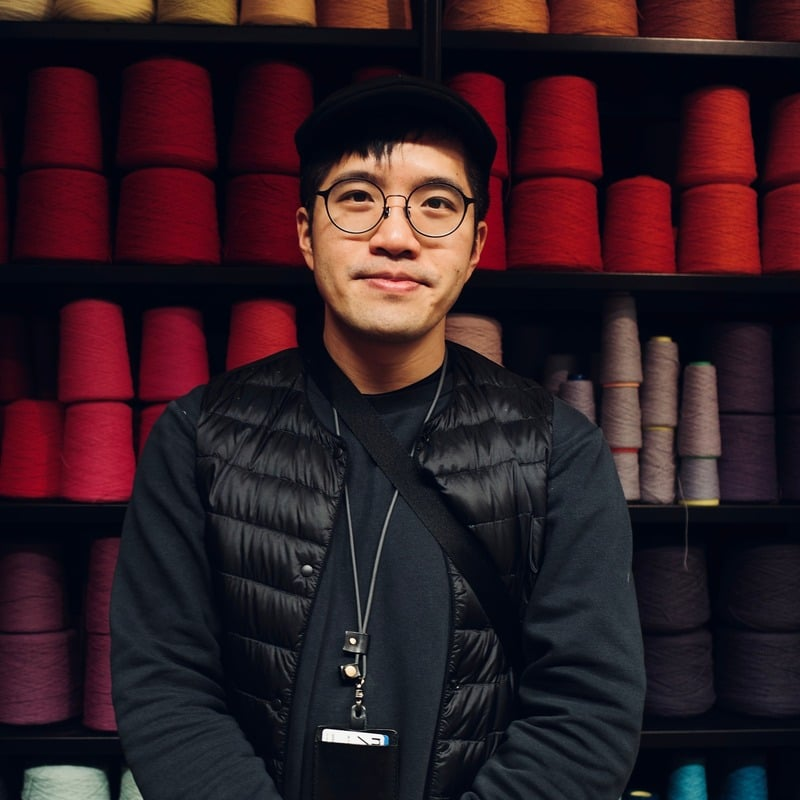
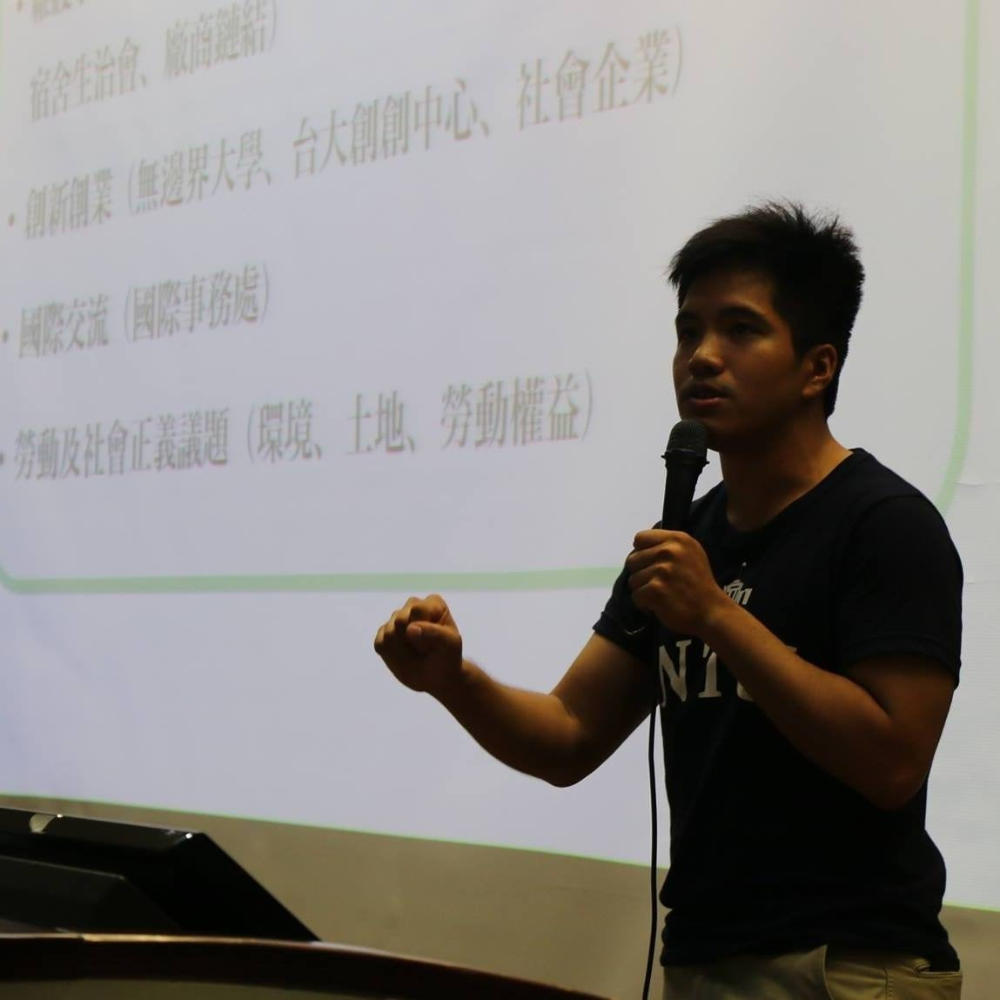
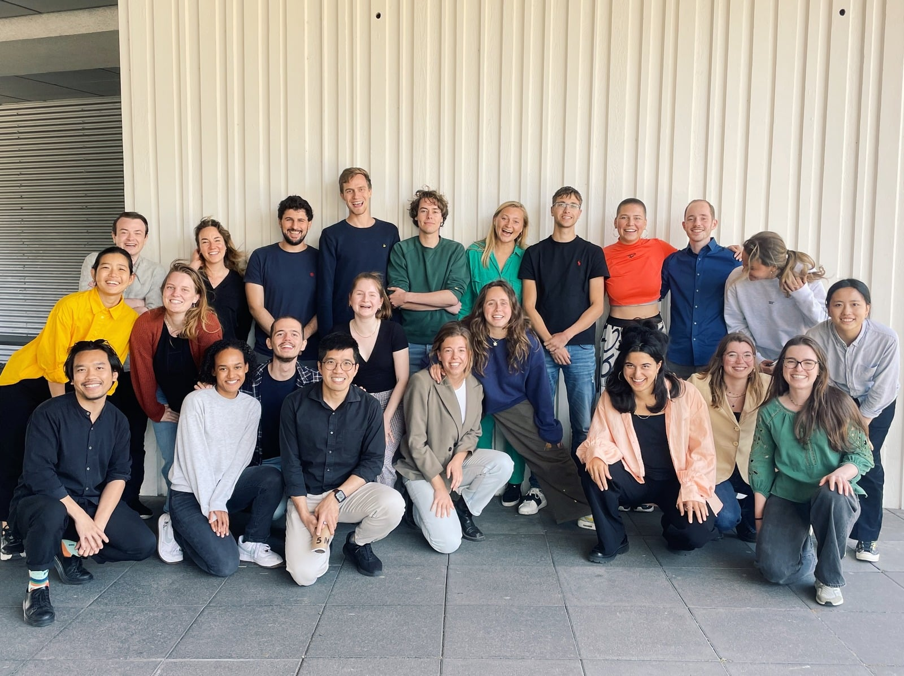
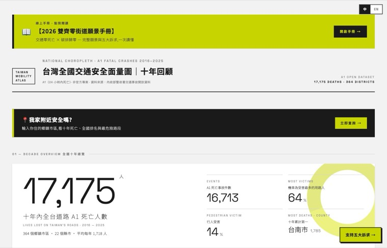
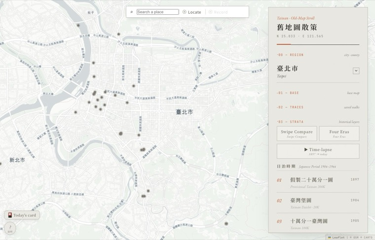
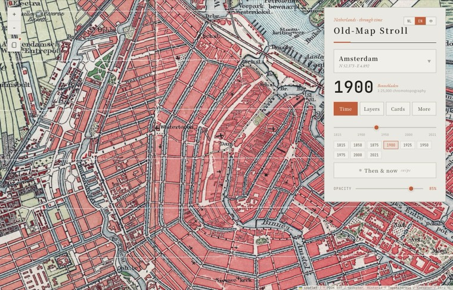

Executive Supervisor & Co-Founder
Vision Zero Taiwan (NPO), Taipei
Mobility-transition policy research & international collaboration
2024 — Now
Mobility-transition policy research & international collaboration
Designer · Researcher · Sustainability Advocate

Spatial. Social. Impact-driven. An urban researcher and advocate with a strong foundation in spatial planning and socio-technical policy.
I specialize in mixed-methods research — combining data-driven insights with qualitative narratives to analyze complex sustainability and mobility-transition challenges. My practice moves between Taipei and the Netherlands, bridging urban policy, data and design: from GIS analysis and documentary-making to Science & Technology Studies (STS) and a more human-centered use of AI.



A road-safety choropleth of 17,175 traffic deaths (2016–2025) across all 364 districts — mapping per-capita risk toward a “Dual-Zero” transit vision.

19 historical map sheets (1904–today) over modern streets, with GPS-triggered colonial-era postcards that “develop” as you walk.

“Oude-Kaart Wandeling” — overlaying ~1900 Bonnebladen maps on today’s Netherlands, with swipe then-and-now and offline use.
Reviewing the city’s pedestrian environment using open data.
A map presenting the Parisian city plan (PLUb).
A physical sensor prototype designed to monitor tree well-being in Amsterdam.
This study uses Barber’s (1998) dilemma to ask whether AI leads to a harmful “Pandora” scenario or a beneficial “Jeffersonian” one that fosters democratic engagement. Focusing on road safety — an urgent challenge causing 1.19 million fatalities a year, often in lower-income regions — it develops a citizen-friendly, AI-assisted website that disseminates proven strategies such as “Sustainable Safety” and the “Urban Street Design Guide,” bridging knowledge and language gaps worldwide.
Through three rounds of iterative prototyping — guided by citizen input from workshops and surveys — the final prototype integrates both human and AI elements, demonstrating that AI can enhance civic participation and public discourse.
Building on the Human-Centered AI (HCAI) framework, the study introduces a Citizen-AI model, supported by two original frameworks:
Together they offer a practical, ethical guide ensuring new systems prioritize human welfare and meaningful public involvement.
The city’s ~300-year-old quay walls are deteriorating; a triple-helix collaboration explores viable solutions.
An online bank for sustainable investment — driving positive transformation in the business world.